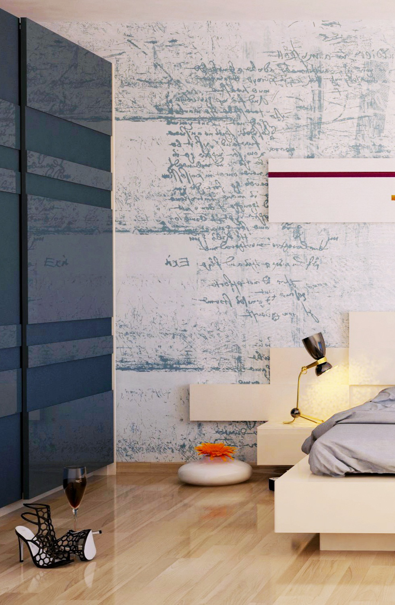

@media(max-width: 900px) {
.gallery { grid-template-columns: repeat(2, 1fr); }
.hero h2 { font-size: 40px; }
}
@media(max-width: 600px) {
.gallery { grid-template-columns: 1fr; padding: 100px 20px; }
header { padding: 20px; }
}

Project One

Project Two
CLOSE
Project One

